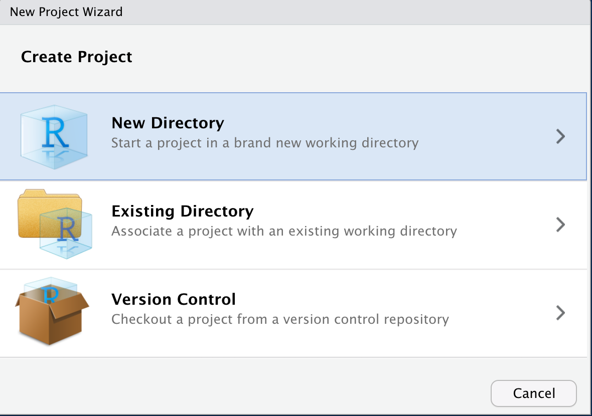
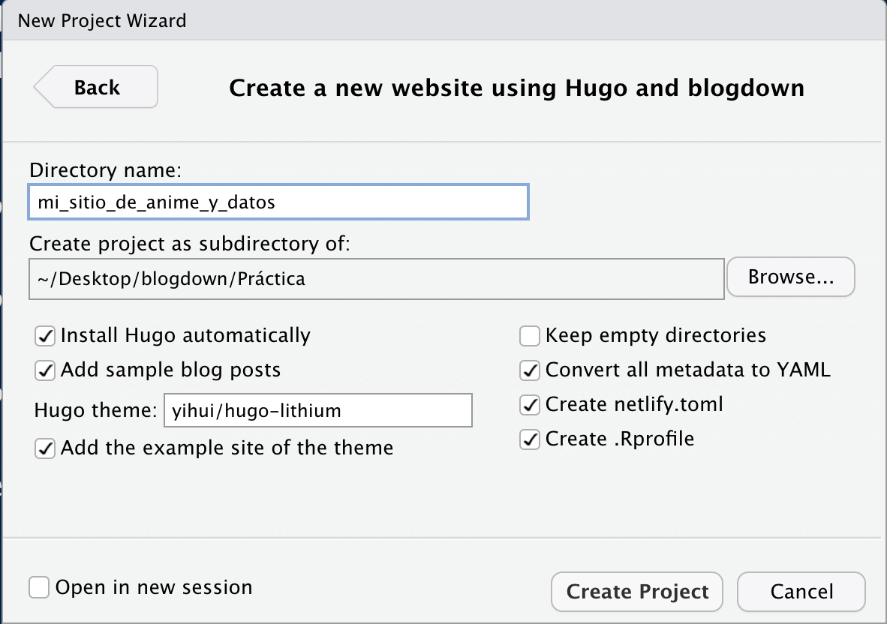
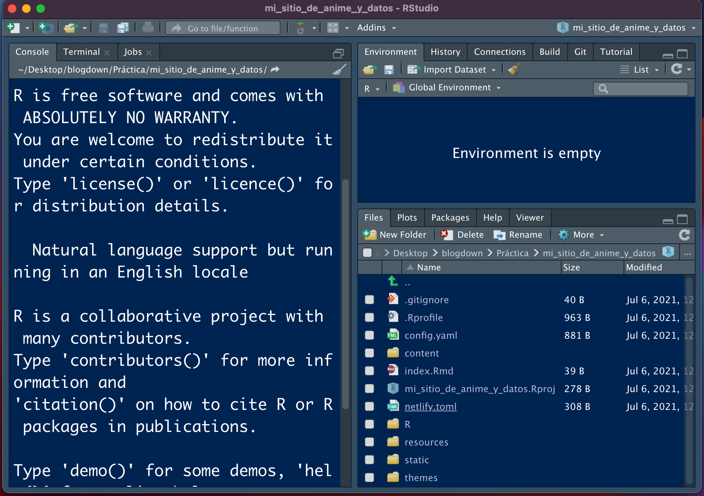
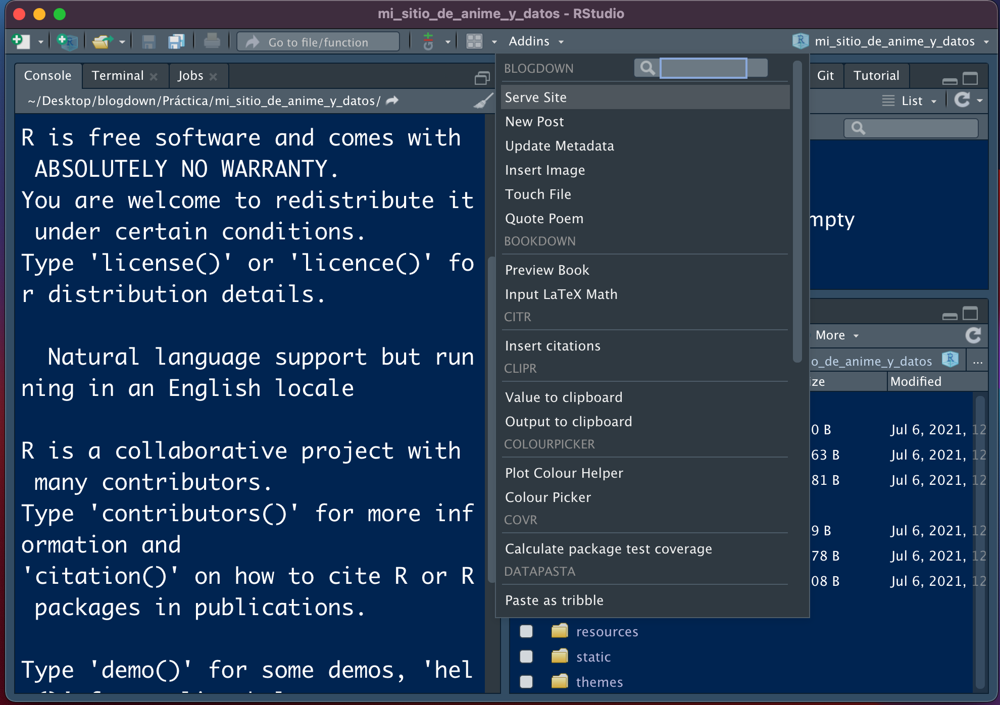
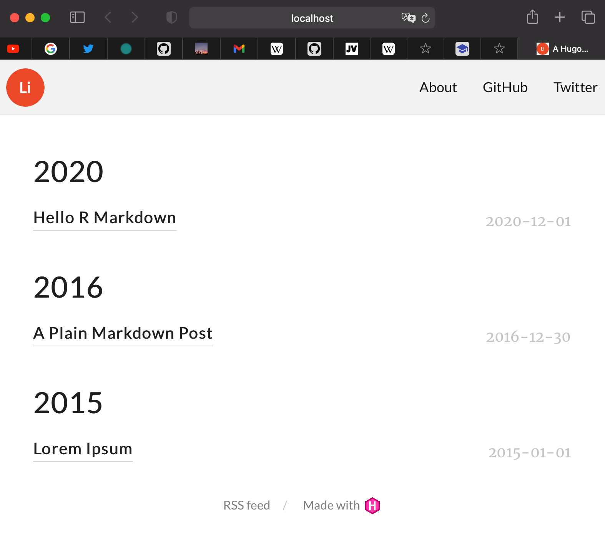
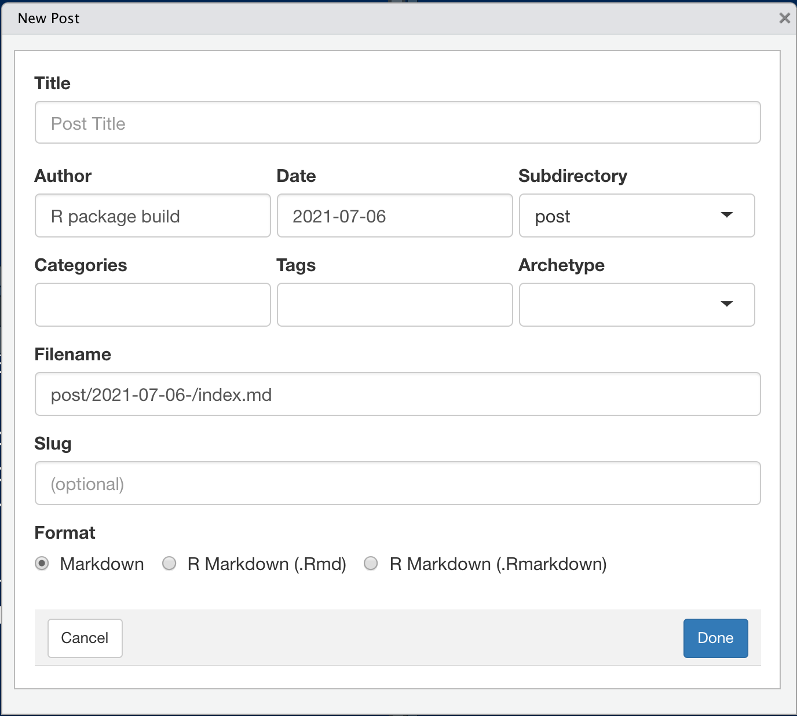
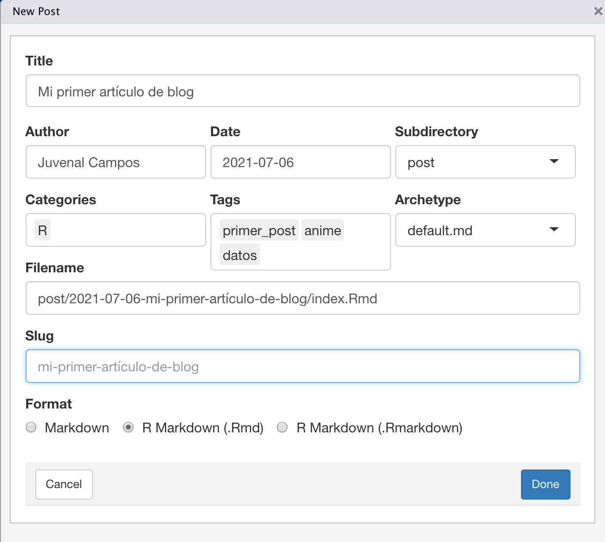

Generando un blog y más cosas técnicas
En esta entrada de blog planeo ir escribiendo tutoriales y guías técnicas para poder tabajar con R y blogdown.
Proceso de trabajo
Una vez que ya estamos decididos a generar nuestra página con esta librería ( decidirse es el paso más difícil) ponemos manos a la obra.
Un primer paso sería revisar los temas de Hugo para ver cual es el tema que más se adapta a tus gustos y necesidades.
Otro paso inicial sería tener a la mano imagenes para adornar tu página principal y tener una idea mas o menos clara de como quieres que se vea la página.
También es conveniente que redactes un texto para explicar acerca de tí, quién eres y que esperas lograr publicando tu blog, y también tener a la mano tus redes de contacto (RRSS, correo) para ponerlos a disposición de la gente que te gustaría que te contactara.
Una vez con todo esto, describo a continuación como es el proceso básico para generar un blog por primera vez.
Para crear el blog por primera vez:
- Nos vamos a
File > New Project >en la barra de herramientas de RStudio.

- Seleccionamos
New Directory >para crear una carpeta con todos los archivos que se van a requerir. Una vez aquí seleccionamos la opción deWebsite using blogdownpara generar un directorio adaptado a este fin.

- Una vez que vamos a crear el nuevo directorio, le damos un nombre y seleccionamos la opción de descargar
Hugo, el tema que se va a ocupar (ver temas en https://themes.gohugo.io) y demás opciones por default.
Terminamos por presionar Create Project.

- Una vez que configuramos el proyecto y el paquete
blogdownya creo los archivos base, la sesión se tiene que ver como en la siguiente imagen:

- Para correr el sitio, nos vamos a la sección de
Addins, le damos enServe Sitey en la ventana del visualizador se debería ver la página generada.

- La página generada se puede ver como en la imagen a continuación. Se utiliza el tema seleccionado y se ponen, por default, tres posts que podemos eliminar en la carpeta de contenido.

La página se puede modificar, modificando los archivos de la carpeta de layouts dentro de los archivos que ya nos instaló el paquete blogdown. Esto para darle una identidad propia, si se requiere.
Para publicar una nueva entrada:
Para publicar una entrada, seguimos el siguiente procedimiento:
- Nos vamos a la sección de
Addinsy seleccionamosNew Post. Una vez que lo hacemos, nos sale la siguiente ventana:

- Ya en esta ventana, rellenamos cada campo de metadatos con los datos que consideremos pertinentes.

Y, a partir de acá, prosigue escribir el artículo con nuestros conocimientos de R y RMarkdown.